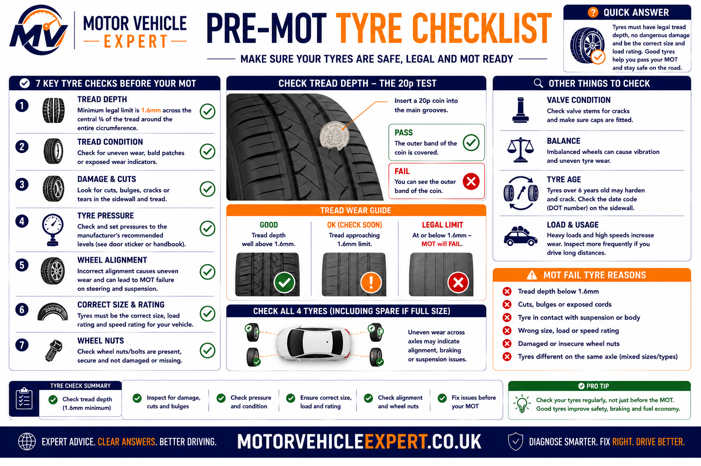
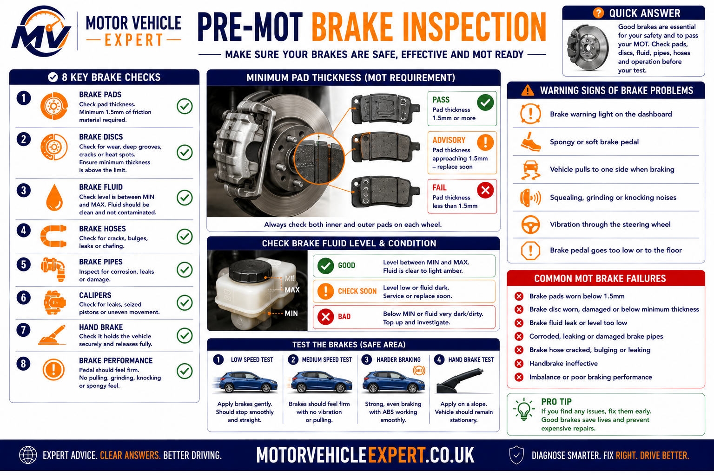
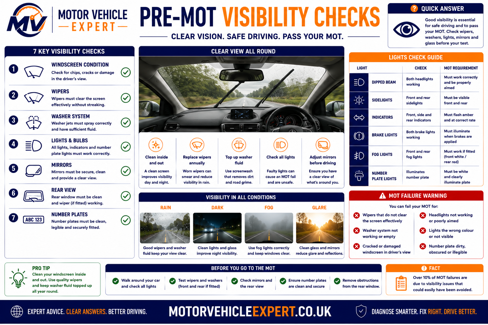

How Do You Prepare for an MOT Test?
Preparing your vehicle before an MOT gives you the opportunity to identify simple faults that commonly cause avoidable failures. Spending 20–30 minutes checking the condition of your tyres, lights, brakes, wipers, washers, mirrors, number plates and dashboard warning lights can significantly improve the chances of passing first time while also making your vehicle safer to drive.
An MOT is not a service and the tester cannot repair defects during the inspection. By carrying out a structured pre-MOT inspection yourself, you can arrange repairs before test day instead of discovering problems after a failed certificate.
Most MOT failures are caused by faults drivers can often identify themselves, including worn tyres, blown bulbs, damaged wiper blades, empty washer bottles, unreadable number plates and illuminated warning lights. Finding these issues before the test is usually cheaper than arranging repairs after a failure.
Why Preparing Before an MOT Is Worthwhile
Preparing your vehicle before its MOT is not about trying to "beat" the inspection. It is about identifying genuine safety defects before they become MOT failures and ensuring your vehicle is presented in the best possible condition.
Identify Simple Faults
Items such as blown bulbs, worn wipers, damaged number plates and low washer fluid are quick and inexpensive to correct before your appointment.
Reduce Repair Delays
Finding faults in advance allows you to arrange repairs at a convenient time rather than urgently searching for parts after a failed MOT.
Improve Road Safety
Many MOT items relate directly to braking performance, tyre grip, steering control and driver visibility. Checking these systems benefits you long before the test itself.
Avoid Repeat Visits
A little preparation can reduce the likelihood of failing for straightforward defects that could otherwise require a retest appointment.
Complete Pre-MOT Checklist Before Test Day
This checklist covers the items most likely to affect an MOT result. Some checks take only a few minutes and can prevent unnecessary failures, while others may identify faults that require professional inspection before the test.
Carry out these checks a few days before your MOT appointment rather than on the morning of the test. This gives you enough time to replace bulbs, top up fluids or arrange repairs if necessary.
Tyres
- ✓ Minimum 1.6 mm tread depth
- ✓ Even tyre wear
- ✓ No exposed cords
- ✓ No dangerous sidewall damage
- ✓ Correct tyre pressures
Brakes
- ✓ No grinding noises
- ✓ Vehicle stops straight
- ✓ Handbrake operates correctly
- ✓ Brake pedal feels firm
- ✓ No warning lights
Exterior Lights
- ✓ Headlights
- ✓ Side lights
- ✓ Brake lights
- ✓ Indicators
- ✓ Reverse lights where fitted
Visibility
- ✓ Wiper blades
- ✓ Screenwash topped up
- ✓ Windscreen damage
- ✓ Mirrors secure
- ✓ Clean glass
Dashboard
- ✓ ABS light off
- ✓ Airbag light off
- ✓ Brake warning light off
- ✓ Engine light investigated
- ✓ TPMS operating correctly
Vehicle Exterior
- ✓ Number plates readable
- ✓ Doors open correctly
- ✓ Bonnet secure
- ✓ Fuel cap fitted
- ✓ Tow bar secure if fitted
An MOT tester only inspects items covered by the MOT Inspection Manual. A vehicle can pass an MOT and still require servicing or repairs, while a well-maintained vehicle can still fail because of a single defective bulb, worn tyre or illuminated warning light.

Checks Most Drivers Can Perform
- ✓ Check tyre tread depth.
- ✓ Inspect tyre condition.
- ✓ Test every exterior light.
- ✓ Clean number plates.
- ✓ Top up washer fluid.
- ✓ Replace worn wiper blades.
- ✓ Remove dashboard warning lights where appropriate.
- ✓ Clean mirrors and glass.
Checks That May Require a Garage
- ✓ Brake efficiency concerns.
- ✓ Suspension knocks.
- ✓ Steering play.
- ✓ Wheel bearing noise.
- ✓ Exhaust leaks.
- ✓ Emissions faults.
- ✓ Oil or brake-fluid leaks.
- ✓ Electronic fault diagnosis.
If your vehicle pulls sharply under braking, produces excessive exhaust smoke, has steering vibration, serious suspension knocking, severe tyre damage or brake warning lights, arrange repairs before attending the MOT. These defects are safety-critical and are significantly more likely to result in a failed test.
Check Your Tyres Before the MOT
Tyres are one of the most common MOT failure items because they are the only part of the vehicle that remains in direct contact with the road. Even a well-maintained car can fail immediately if a tyre has insufficient tread, dangerous damage or an exposed cord. Fortunately, tyre inspections are among the easiest checks motorists can perform at home before an MOT appointment.
Walk around the vehicle and inspect every tyre—including the spare if fitted externally. Look for uneven wear, bulges, cuts, embedded objects and signs of damage. Turn the steering fully left and right to inspect the inside shoulders of the front tyres.
Tread Depth
Legal minimum across the central three-quarters of the tyre.
At least 1.6 mmTyre Damage
Inspect for cuts, bulges, exposed cords and severe cracking.
No Dangerous DamageTyre Pressure
Correct inflation improves braking, handling and tyre wear.
Manufacturer SpecificationTyre Checks Every Driver Should Perform
- ✓ Measure tread depth.
- ✓ Inspect inner and outer sidewalls.
- ✓ Check for nails or embedded objects.
- ✓ Look for bulges or impact damage.
- ✓ Ensure matching tyre sizes on each axle where appropriate.
- ✓ Inflate tyres to the recommended pressure.
- ✓ Inspect valve stems and valve caps.
- ✓ Check wheel nuts appear secure.
Common Tyre MOT Failures
- ✗ Tread below 1.6 mm.
- ✗ Exposed ply or steel cords.
- ✗ Large cuts.
- ✗ Sidewall bulges.
- ✗ Dangerous tyre separation.
- ✗ Incorrect tyre fitted.
- ✗ Serious structural damage.
- ✗ Unsafe condition.
Uneven tyre wear often indicates suspension wear, poor wheel alignment or steering component problems. Replacing tyres alone may not solve the underlying issue.
Inspect Your Brakes Before an MOT
The braking system is one of the most important safety components assessed during an MOT. Testers evaluate braking efficiency, brake balance and the overall condition of brake components. While specialist equipment measures braking performance, drivers can still identify many warning signs before attending the test.
Drive at a safe speed on a quiet road. The vehicle should brake smoothly without pulling to one side, excessive vibration, grinding noises or abnormal pedal travel.

Brake Pads
Listen for grinding noises and inspect pad thickness where visible.
Replace Before Excessive WearBrake Discs
Inspect for excessive corrosion, cracking or severe scoring.
Must Remain ServiceableBrake Fluid
Fluid level should remain between minimum and maximum marks.
No Visible LeaksSigns Your Brakes Need Attention
- ✓ Grinding or squealing noises.
- ✓ Brake pedal feels soft.
- ✓ Vehicle pulls while braking.
- ✓ Brake warning light illuminated.
- ✓ Excessive steering vibration.
- ✓ Burning smell after braking.
- ✓ Poor handbrake performance.
- ✓ Brake fluid level dropping.
Brake Items Checked During the MOT
- ✓ Brake pedal condition.
- ✓ Brake servo operation.
- ✓ Brake pipes and hoses.
- ✓ Hydraulic leaks.
- ✓ Brake discs and drums.
- ✓ Brake calipers where visible.
- ✓ Parking brake efficiency.
- ✓ Roller brake performance test.
If your brake warning light is illuminated, the pedal feels unusually soft or the vehicle pulls violently under braking, do not ignore the problem. These symptoms may indicate a serious braking fault requiring immediate inspection before the vehicle is driven normally.
Check Every Exterior Light Before the MOT
Faulty lighting is one of the UK's most common MOT failure reasons. Fortunately, it is also one of the easiest problems to identify before attending the test. Every exterior light should operate correctly, display the correct colour and remain securely fitted to the vehicle.
Switch on every lighting function individually and walk around the vehicle. Ask someone to operate the brake pedal while you confirm that all brake lights illuminate correctly. Remember to check the high-level brake light where fitted.
Headlights
Check dipped beam, main beam and headlamp aim.
Fully OperationalIndicators
Ensure all indicators flash correctly and at the correct speed.
Amber Light RequiredBrake Lights
Check both rear brake lamps and the centre brake light where fitted.
All Must OperateRear Lights
Confirm side lights, tail lamps and number plate lights work correctly.
Clearly VisibleReverse Light
Inspect reverse lamps on vehicles where applicable.
Correct OperationFog Lights
Rear fog lamps must illuminate correctly when switched on.
Bright Red LightMany lighting problems are caused by inexpensive bulbs or poor electrical connections. Replacing a faulty bulb before the MOT is considerably cheaper than arranging a retest after failure.
Visibility Checks Before an MOT Test
The driver must have a clear view of the road ahead. Windscreens, wipers, washers and mirrors are all inspected during an MOT because poor visibility significantly increases accident risk.

Items to Check
- ✓ Windscreen free from serious damage.
- ✓ No cracks affecting driver's view.
- ✓ Wiper blades clear water effectively.
- ✓ Washer jets spray correctly.
- ✓ Screenwash reservoir topped up.
- ✓ Interior mirror secure.
- ✓ Door mirrors undamaged.
- ✓ Mirrors provide a clear rear view.
Common Visibility MOT Failures
- ✗ Split or detached wiper blades.
- ✗ Washer system inoperative.
- ✗ Empty washer bottle.
- ✗ Large windscreen damage.
- ✗ Missing mirror.
- ✗ Loose mirror housing.
- ✗ Restricted driver's field of view.
- ✗ Excessive windscreen contamination.
Wiper Blades
Replace blades that smear, skip or leave streaks.
Low Cost RepairWindscreen Damage
Inspect for chips and cracks within the swept area.
Repair EarlyWasher Fluid
Ensure enough screenwash is available for the inspection.
Top Up Before TestIf you cannot see clearly through the windscreen during heavy rain, replace the wiper blades immediately rather than waiting for the MOT. Good visibility is essential for safe driving in all weather conditions.
Dashboard Warning Lights That Can Affect an MOT
Modern vehicles continuously monitor important safety and emissions systems. If certain dashboard warning lights remain illuminated during the MOT inspection, the vehicle may fail because the system is indicating a fault that could affect road safety or environmental performance.
Warning Lights Commonly Checked
- ✓ ABS warning light
- ✓ Airbag / SRS light
- ✓ Brake system warning light
- ✓ Electronic Stability Control (ESC)
- ✓ TPMS (where applicable)
- ✓ Engine management light
Before Your MOT
- ✓ Start the engine.
- ✓ Confirm warning lamps illuminate.
- ✓ Ensure they extinguish correctly.
- ✓ Investigate any remaining warning light.
- ✓ Do not ignore intermittent faults.
- ✓ Repair safety-related faults before testing.
Simply clearing fault codes without repairing the underlying problem is unlikely to prevent future warning lights. If the fault returns during the inspection, the vehicle may still fail.
Number Plate Checks Before an MOT
Number plates must be securely fitted, clearly readable and displayed in the correct format. Dirty, cracked or incorrectly spaced plates frequently result in unnecessary MOT failures.
Cleanliness
Fully ReadableRemove dirt and road film.
Condition
No CracksReplace damaged plates.
Spacing
Legal FormatCharacters must not be altered.
Horn Inspection
The horn should produce a continuous, clear sound that can warn other road users. A weak, intermittent or completely inoperative horn can result in an MOT failure.
Press the horn briefly while stationary. If the sound is weak, distorted or absent, investigate before attending the MOT.
Mirror Condition and Security
Mirrors provide essential rearward visibility and must remain securely attached with no damage that significantly restricts the driver's view.
Inspect For
- ✓ Secure mountings
- ✓ Clear reflective surface
- ✓ No loose housings
- ✓ Good adjustment
Common Problems
- ✗ Missing mirror
- ✗ Broken glass
- ✗ Loose mounting
- ✗ Restricted view
Seatbelt Safety Inspection
Seatbelts are among the most important occupant safety systems inspected during an MOT. Every fitted belt should extend, retract and latch correctly without excessive wear or damage.
Check Before the MOT
- ✓ Pull belt fully out.
- ✓ Inspect for cuts.
- ✓ Check fraying.
- ✓ Confirm buckle locks.
- ✓ Ensure belt retracts smoothly.
- ✓ Check mounting points.
Potential MOT Failures
- ✗ Damaged webbing
- ✗ Poor retraction
- ✗ Faulty buckle
- ✗ Loose anchor points
- ✗ Missing seatbelt
- ✗ Safety defects
Never ignore damaged seatbelts. Even if an MOT has not yet expired, defective restraints should be repaired immediately because they are designed to protect occupants during a collision.
Steering Checks Before an MOT
The steering system allows you to control the direction of the vehicle safely and accurately. During an MOT, the tester checks steering components for excessive wear, damage, insecurity and correct operation. Even small amounts of play can indicate worn steering joints or suspension components that require attention.
Checks You Can Perform
- ✓ Steering wheel turns smoothly.
- ✓ No excessive free play.
- ✓ No heavy steering.
- ✓ No warning lights.
- ✓ No unusual vibration.
- ✓ Listen for knocking when turning.
- ✓ Vehicle tracks straight.
- ✓ Check power steering fluid where applicable.
Common Steering MOT Defects
- ✗ Excessive steering play.
- ✗ Worn track rod ends.
- ✗ Damaged steering rack gaiters.
- ✗ Power steering malfunction.
- ✗ Loose steering components.
- ✗ Steering warning light.
- ✗ Fluid leaks.
- ✗ Unsafe steering operation.
If the steering feels unusually heavy, develops excessive free play or produces knocking noises while turning, arrange an inspection before the MOT. Steering faults can seriously affect vehicle control.
Suspension Inspection Before an MOT
The suspension keeps the tyres firmly in contact with the road while maintaining vehicle stability and ride comfort. MOT testers inspect springs, shock absorbers, mountings, wishbones, bushes and ball joints for excessive wear or damage.
Shock Absorbers
Inspect for oil leaks and secure mountings.
No LeaksSprings
Check for broken coils or severe corrosion.
Complete & SecureSuspension Bushes
Look for excessive movement or deterioration.
Minimal WearWarning Signs
- ✓ Knocking over bumps.
- ✓ Vehicle leaning.
- ✓ Uneven tyre wear.
- ✓ Poor handling.
- ✓ Excessive bouncing.
- ✓ Steering instability.
- ✓ Suspension warning messages.
- ✓ Clunking noises.
Typical MOT Inspection
- ✓ Coil springs.
- ✓ Dampers.
- ✓ Suspension arms.
- ✓ Ball joints.
- ✓ Anti-roll bar links.
- ✓ Mountings.
- ✓ Bushes.
- ✓ Structural security.
A knocking suspension rarely improves on its own. Early diagnosis can prevent additional wear to tyres, steering components and wheel alignment.
Exhaust Checks Before the MOT
The exhaust system reduces engine noise and directs harmful gases safely away from the passenger compartment. During the MOT it is inspected for leaks, corrosion, security and excessive noise.
Corrosion
Inspect CarefullySurface rust is common, but severe corrosion can weaken the exhaust.
Mountings
SecureLoose rubber hangers can allow excessive movement.
Leaks
No Blowing NoiseListen for exhaust blowing during idle and acceleration.
Emissions Checks Before the MOT
Petrol and diesel vehicles must meet legal emissions standards. Excessive smoke, engine faults or emissions system failures can all contribute to an MOT failure.
Before Your MOT
- ✓ Ensure engine reaches operating temperature.
- ✓ Investigate engine warning lights.
- ✓ Avoid excessive exhaust smoke.
- ✓ Service overdue vehicles.
- ✓ Check for fuel system faults.
- ✓ Use the correct engine oil.
Common Emission Problems
- ✗ Faulty oxygen sensor.
- ✗ DPF problems.
- ✗ Catalytic converter faults.
- ✗ EGR malfunction.
- ✗ Misfiring engine.
- ✗ Engine management faults.
A fully warmed engine often produces cleaner emissions than a cold engine. If possible, drive the vehicle normally before arriving at the MOT station.
Inspect the Vehicle for Fluid Leaks
Visible fluid leaks may indicate developing mechanical problems and, depending on severity and location, can affect the MOT outcome. Oil, brake fluid, coolant and fuel leaks should always be investigated before attending the inspection.
Engine Oil
Minor Seepage May Be AcceptableBrake Fluid
No Leaks PermittedCoolant
No Active LeaksBrake fluid leaks, fuel leaks or severe oil leaks should never be ignored. These faults can create significant safety risks and are far more important than simply passing the MOT.
Review Previous MOT Advisories Before Your Next Test
One of the most valuable preparations before an MOT is checking the vehicle's previous MOT history. Advisories are not failures, but they highlight components showing wear or deterioration that may become MOT failures if ignored before the next inspection.
Many MOT failures could have been avoided simply by repairing advisory items during the previous year. Components such as tyres, brake discs, suspension bushes and exhaust systems naturally deteriorate over time, meaning last year's advisory may become this year's failure.
Tyre Advisory
Tyres close to the legal limit may now require replacement.
Recheck Tread & ConditionBrake Advisory
Brake wear often worsens significantly between annual MOT tests.
Inspect Pads & DiscsSuspension Advisory
Minor play can develop into excessive wear during normal driving.
Professional InspectionOil Leak Advisory
Small leaks may worsen if left unattended.
Check Under VehicleExhaust Corrosion
Surface corrosion may eventually produce leaks.
Inspect Entire SystemCorrosion
Structural corrosion rarely improves without repair.
Repair Early| Previous Advisory | What To Check Before MOT | Priority |
|---|---|---|
| Tyres Wearing Low | Measure tread depth and inspect for damage. | High |
| Brake Wear | Inspect pads, discs and brake operation. | High |
| Suspension Wear | Listen for knocks and inspect for play. | High |
| Oil Leak | Confirm leak has not become excessive. | Medium |
| Exhaust Corrosion | Check for blowing noises and loose mountings. | Medium |
| Minor Corrosion | Inspect affected area for deterioration. | High |
Treat every advisory as advance notice rather than something to ignore. Repairing advisory items gradually throughout the year is normally less expensive than repairing several MOT failures at once.
When Should You Book an MOT?
Booking your MOT early gives you time to correct faults before your current certificate expires. In most cases, you can have the vehicle tested up to one month (minus one day) before the expiry date while keeping the same renewal anniversary.
Before Booking
- ✓ Complete the pre-MOT inspection.
- ✓ Review previous advisories.
- ✓ Replace blown bulbs.
- ✓ Check tyres.
- ✓ Top up washer fluid.
- ✓ Investigate warning lights.
- ✓ Repair obvious defects.
- ✓ Take a short road test.
On the Day of the MOT
- ✓ Arrive with a clean vehicle.
- ✓ Clean number plates.
- ✓ Remove heavy clutter.
- ✓ Ensure fuel cap is fitted.
- ✓ Drive until engine reaches operating temperature.
- ✓ Bring locking wheel nut key if fitted.
- ✓ Mention any known issues honestly.
- ✓ Ask for advisories to be explained.
Best Time
Several Days Before ExpiryVehicle Clean
Improves InspectionWarm Engine
Helps Emissions TestRepair First
Avoid Repeat TestWaiting until the MOT expires leaves very little time for repairs if the vehicle fails. Booking early provides flexibility, reduces stress and helps keep your vehicle legally on the road.
Common MOT Mistakes That Can Easily Be Avoided
Many vehicles fail the MOT because of simple faults that could have been identified in a few minutes at home. Spending a little time checking your vehicle before the inspection can reduce the likelihood of avoidable failures and may save both time and repair costs.
Frequently Overlooked Items
- ✓ Blown exterior bulbs.
- ✓ Empty windscreen washer bottle.
- ✓ Worn wiper blades.
- ✓ Low tyre tread.
- ✓ Incorrect tyre pressures.
- ✓ Dirty registration plates.
- ✓ Warning lights left unresolved.
- ✓ Loose mirrors or number plates.
Items That Usually Need Professional Repair
- ✓ Brake wear.
- ✓ Suspension faults.
- ✓ Steering play.
- ✓ Wheel bearing noise.
- ✓ Exhaust leaks.
- ✓ Corrosion repairs.
- ✓ Emissions faults.
- ✓ Airbag or ABS faults.
| Mistake | Likely Result | Best Practice |
|---|---|---|
| Ignoring warning lights | Possible MOT failure | Diagnose faults before booking. |
| Not checking tyre tread | Immediate failure if below limit | Measure all four tyres. |
| Empty washer bottle | Avoidable failure | Top up before leaving home. |
| Broken light bulb | Lighting failure | Check every exterior lamp. |
| Ignoring advisories | Repeat failure next year | Repair issues throughout the year. |
| Booking too late | Less time for repairs | Book several weeks early. |
The majority of inexpensive MOT failures involve basic maintenance rather than major mechanical defects. Replacing a £5 bulb or fitting new wiper blades before the test is considerably cheaper than arranging repairs and returning for another inspection.
What Should You Check First?
Not every inspection item carries the same level of importance. Safety-critical defects should always take priority over cosmetic issues, followed by legal compliance and then routine maintenance items.
Priority 1
Safety CriticalBrakes, steering, suspension, tyres, seatbelts and warning lights.
Priority 2
Legal RequirementsLighting, mirrors, horn, registration plates and visibility.
Priority 3
Routine MaintenanceFluid levels, washer bottle, tyre pressures and general cleanliness.
| Vehicle Condition | Recommended Action | MOT Risk |
|---|---|---|
| No faults found | Book MOT with confidence. | Low |
| Minor maintenance items | Repair before the appointment. | Low–Medium |
| Safety-related defects | Repair immediately before booking. | High |
| Multiple warning lights | Carry out professional diagnostics. | Very High |
| Unsure about vehicle condition | Arrange a pre-MOT inspection. | Medium |
A professional pre-MOT inspection often identifies faults before the official test begins. Repairing defects in advance can reduce inconvenience, minimise repeat visits and help avoid unnecessary MOT retest fees.
10-Minute Pre-MOT Checklist
Complete this quick inspection immediately before travelling to the MOT test station.
Exterior
Lights, mirrors, number plates and wipers.
Tyres
Tread, pressures and sidewalls.
Dashboard
No warning lights remaining.
Engine Bay
Fluid levels and obvious leaks.
Cabin
Horn, seatbelts and mirrors.
Visibility
Clean windscreen and washer fluid.
Road Test
Check brakes, steering and suspension.
Before Arrival
Warm engine and carry locking wheel nut key.
Walking once around the vehicle before leaving home is one of the simplest ways to reduce the chance of an avoidable MOT failure. Most checks require no specialist tools and can be completed in under ten minutes.
Common MOT Repair Costs in the UK
Preparing your vehicle before an MOT is often significantly cheaper than allowing several faults to develop into MOT failures. These guide prices represent typical UK independent garage estimates and will vary depending on vehicle make, model, parts quality and labour rates.
Bulb Replacement
Exterior light bulb replacement.
£5–£35Wiper Blades
Pair of quality replacement blades.
£15–£45Single Tyre
Typical mid-range replacement tyre.
£70–£180Brake Pads
Front or rear axle replacement.
£100–£250Drop Link
Common suspension wear item.
£80–£180Exhaust Repair
Repair or replacement section.
£120–£350Track Rod End
Including wheel alignment where required.
£90–£220Wheel Bearing
One hub bearing replacement.
£150–£350Welding Repairs
Localised structural repairs.
£200–£800+Ignoring advisories often allows relatively inexpensive repairs to become significantly more expensive. Replacing worn brake pads, for example, is considerably cheaper than replacing both brake pads and damaged brake discs later.
Should You Repair the Vehicle Before the MOT?
Where possible, repairing known faults before the MOT usually saves time, reduces inconvenience and increases the likelihood of passing the first inspection.
| Fault Found | Repair Before MOT? | Reason |
|---|---|---|
| Blown Bulb | Yes | Quick, inexpensive and easily avoided failure. |
| Worn Wiper Blade | Yes | Simple replacement before inspection. |
| Tyre Below Limit | Yes | Immediate MOT failure. |
| Brake Wear | Yes | Critical safety component. |
| Warning Lights | Yes | May indicate serious system faults. |
| Minor Cosmetic Damage | Usually No | Normally outside MOT inspection scope. |
| Exhaust Leak | Yes | Can affect emissions and noise levels. |
| Fluid Leak | Yes | Severity may affect MOT result. |
Repair Before the MOT If...
- ✓ The fault is safety related.
- ✓ A warning light remains on.
- ✓ You already know the vehicle would fail.
- ✓ Repairs are inexpensive.
- ✓ The issue affects visibility.
- ✓ The fault has already appeared as an advisory.
You May Wait If...
- ✓ Cosmetic damage only.
- ✓ Minor paint defects.
- ✓ Interior trim issues.
- ✓ Non-testable accessories.
- ✓ No effect on safety or legality.
- ✓ Confirm with a qualified technician if unsure.
MOT Test vs Vehicle Service
Many motorists assume an MOT and a vehicle service are the same. In reality they serve completely different purposes. An MOT checks whether the vehicle meets the legal minimum roadworthiness standard, while a service focuses on maintaining reliability and reducing future wear.
| Feature | MOT Test | Vehicle Service |
|---|---|---|
| Legal Requirement | Yes | No |
| Roadworthiness Inspection | Yes | Limited |
| Oil Change | No | Yes |
| Filter Replacement | No | Yes |
| Fluid Replacement | No | Often Included |
| Safety Inspection | Yes | Yes |
| Maintenance Work | No | Yes |
| Certificate Issued | Yes | No |
MOT
Confirms legal roadworthiness on the day of inspection.
Service
Maintains reliability, performance and longevity.
Best Practice
Service the vehicle before the MOT where practical.
Booking a routine service shortly before the MOT often identifies worn components before they become official MOT failures. Combining both appointments can reduce overall costs and minimise time off the road.
Frequently Asked Questions About Preparing for an MOT
Preparing for an MOT raises many questions, particularly for first-time vehicle owners or motorists whose previous MOT included advisories. The answers below explain the most common concerns and should match the FAQ schema included with this guide.
How can I improve my chances of passing an MOT?
The best way to improve your chances of passing an MOT is to carry out a complete inspection several days before your appointment rather than waiting until the morning of the test. Check your tyres for tread depth and damage, confirm every exterior light operates correctly, inspect the windscreen for excessive damage, replace worn wiper blades and ensure all fluid levels are correct. If any dashboard warning lights remain illuminated after starting the engine, investigate them before attending the test. Fixing small faults early is normally much cheaper than paying for repairs after an MOT failure and arranging a retest.
Can I carry out a pre-MOT inspection myself?
Yes. Many of the items checked during an MOT can be inspected safely at home without specialist equipment. You can examine tyres, lights, mirrors, seatbelts, windscreen washers, wipers, registration plates and visible fluid leaks. While some mechanical components such as suspension joints or brake efficiency require professional inspection equipment, carrying out a basic home inspection can identify many faults that commonly cause avoidable MOT failures.
Should I service my vehicle before the MOT?
A vehicle service is not legally required before an MOT, but many motorists choose to combine the two appointments. A service often identifies worn brakes, suspension components, leaking fluids or other developing faults before they result in an MOT failure. Servicing the vehicle beforehand can also improve reliability and reduce the likelihood of unexpected repair bills shortly after passing the MOT.
Will warning lights cause an MOT failure?
Yes, depending on the warning light involved. Safety-related systems such as ABS, airbags, electronic stability control and brake warning systems are included within the MOT inspection. If these lights remain illuminated because of an active fault, the vehicle may fail the test. Engine management lights do not always result in an MOT failure directly, but they should never be ignored because they may indicate problems affecting emissions or overall vehicle safety.
Do I need to clean my car before an MOT?
Cleaning your vehicle is not an official MOT requirement, but presenting a reasonably clean car makes it easier for the tester to inspect tyres, registration plates, lights, mirrors and bodywork. Excessive dirt covering number plates, lamps or the windscreen could contribute to an MOT failure, while an excessively cluttered interior may prevent seatbelts from being inspected properly.
How long does a pre-MOT inspection usually take?
A thorough home inspection normally takes between 20 and 30 minutes for most vehicles. A professional garage pre-MOT inspection may take longer because the vehicle can be lifted safely to inspect suspension, steering, exhaust components and brake wear. Spending half an hour checking the vehicle before the MOT can often prevent far more time being lost arranging repairs and a retest.
Should I repair MOT advisories before the next test?
Yes. Advisories highlight components that are beginning to deteriorate but have not yet reached the legal failure standard. Ignoring advisories often results in more expensive repairs later because wear continues between MOT tests. Addressing advisory items throughout the year spreads repair costs more evenly and greatly improves the likelihood of passing the next MOT without difficulty.
What tyre tread depth is required for an MOT?
For most passenger vehicles in the UK, tyres must have a minimum tread depth of 1.6 mm across the central three-quarters of the tread and around the entire circumference. Tyres are also inspected for cuts, bulges, exposed cords and other damage. Checking tyre condition before your MOT is one of the quickest ways to avoid a straightforward failure.
Can low washer fluid fail an MOT?
The MOT requires an effective windscreen washer system capable of cleaning the windscreen. If the washer bottle is empty or the system cannot spray fluid correctly, the vehicle may fail because visibility cannot be maintained. Simply topping up washer fluid before your appointment is one of the easiest preventative checks you can carry out.
What happens if my car fails its MOT?
If your vehicle fails its MOT, you will receive a failure certificate listing the defects identified during the inspection. Depending on the severity of those defects, the vehicle may require repairs before it can legally be driven. Once repairs have been completed, the vehicle can normally be presented for a retest in accordance with the garage's retest policy and DVSA regulations.
Can I drive my car to an MOT if I think it will fail?
Yes, provided the vehicle is insured and you are travelling directly to a pre-booked MOT appointment. However, if the vehicle has a dangerous defect that makes it unsafe to drive, it should not be driven on the road. Even if your MOT has expired, UK law allows you to drive directly to a booked MOT test, but only if the vehicle remains roadworthy and safe enough for the journey.
What documents should I take to an MOT?
Most garages no longer require you to bring any paperwork because MOT records are held electronically by the DVSA. However, taking your previous MOT certificate, service records or details of recent repairs can sometimes help if you wish to discuss advisories or recurring defects with the tester after the inspection.
Does an MOT include a road test?
No. An MOT is primarily a static inspection carried out at an authorised MOT testing station. Testers examine safety-related systems, steering, suspension, brakes, tyres, lights, emissions and structural condition using approved inspection procedures rather than conducting a normal road test.
Will a cracked windscreen fail an MOT?
It can. Damage within the driver's field of vision is assessed much more strictly than damage elsewhere on the windscreen. Large cracks or chips that interfere with visibility or exceed the permitted limits may result in an MOT failure. Small chips should always be repaired promptly before they spread into larger cracks.
Can worn brake pads fail an MOT?
Yes. Brake pads are inspected for excessive wear and overall braking performance is tested using calibrated equipment. If the friction material has worn below safe limits or braking performance falls below the required standard, the vehicle will fail the MOT. Replacing worn pads before the inspection is usually far less expensive than replacing both pads and damaged brake discs later.
Should I replace worn tyres before the MOT?
Absolutely. Tyres are among the most common reasons vehicles fail MOT tests. Replacing tyres before they reach the legal tread limit or develop damage such as cuts, bulges or exposed cords not only improves your chances of passing but also increases safety in wet weather and reduces stopping distances.
What's the difference between an MOT and a vehicle service?
An MOT confirms whether your vehicle meets the minimum legal roadworthiness standard on the day of testing. A service is preventative maintenance carried out according to the manufacturer's schedule and includes replacing fluids, filters and other wear items. A vehicle can pass an MOT while still needing a service, and a fully serviced vehicle can still fail an MOT if a safety defect develops.
Is a professional pre-MOT inspection worthwhile?
For older vehicles or cars with previous advisories, a professional pre-MOT inspection is often excellent value. A technician can identify suspension wear, steering play, brake deterioration, exhaust problems and fluid leaks that are difficult to detect during a home inspection. Repairing these faults before the official MOT often saves both time and money.
What are the easiest MOT failures to avoid?
Many MOT failures involve simple issues that owners can identify themselves. Blown bulbs, worn wiper blades, empty washer bottles, damaged registration plates, underinflated tyres and worn tyre tread are all common examples. Spending half an hour carrying out a structured pre-MOT inspection can eliminate many of these avoidable failures before the vehicle reaches the testing station.
When should I start preparing for my MOT?
Ideally, begin checking your vehicle one or two weeks before the test date. This provides enough time to order replacement parts, book repairs if required and confirm everything is working correctly before attending the MOT. Leaving preparation until the day of the inspection often results in unnecessary stress and increases the risk of avoidable failures.